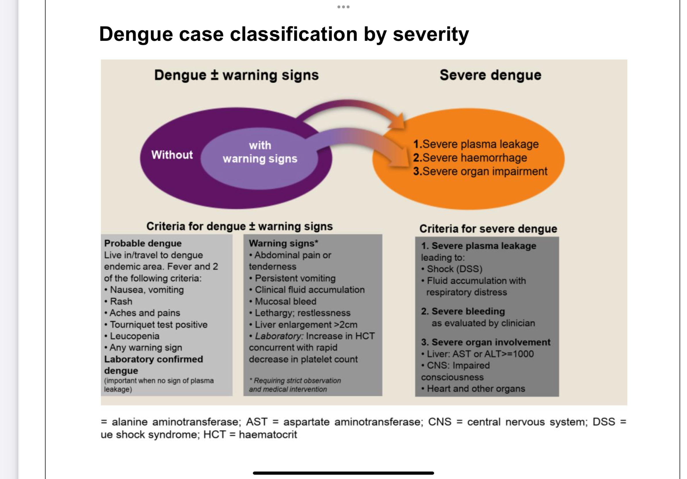

Health Certificate for Medical Practice Application
(Hospital’s Name, Address, Tel, Fax)
Basic Data
| Field | Value |
|---|---|
| Name | |
| Sex | Male Female |
| ID No. | |
| Passport No. | |
| Date of Birth | |
| Nationality | |
| Age | |
| Phone No. |

Laboratory Examinations
A. Chest X-ray for Tuberculosis:
Findings:
Result: Passed TB suspect Pending Failed
Not required for pregnant women or children under 12 years of age
B. Stool Examination for Parasites:
Positive, Species: _________________ Negative
Other parasites that do not require treatment: _________________
Not required for applicants from countries/areas listed in Appendix 3
C. Serological Tests for Syphilis:
Tests: a. RPR VDRL Positive, Titers _______ Negative, Titers _______ b. TPHA TPPA FTA-abs TPLA EIA CIA Positive, Titers _______ Negative, Titers _______ c. Other ___________________ Positive, Titers _______ Negative, Titers _______
Result: Passed Failed
Not required for children under 15 years of age
D. Proof of Positive Measles and Rubella Antibody or Measles and Rubella Vaccination Certificates:
Antibody Tests Measles Antibody Positive Negative Equivocal Rubella Antibody Positive Negative Equivocal
Vaccination Certificates Measles Vaccination Certificate Rubella Vaccination Certificate
Having contraindications, not suitable for vaccination
The final result of health examination:
Passed Need further examinations Failed
Signature of Chief Medical Technologist: ______________________________
Signature of Chief Physician: ________________________________________
Signature of Superintendent: ________________________________________
Date: ______ / ______ / ______ YYYY MM DD
Note: The certificate is valid for three months.